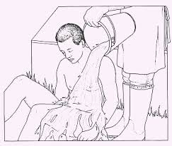
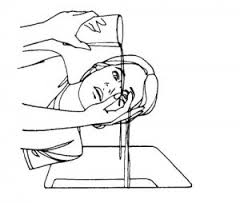

Chemical Burns
Treatment
Remove contaminated clothing.
Flush burned area with cool water for at least 5 minutes.

Treat as you would any major or minor burn.
If eye has been burned:

- Immediately flood face, inside of eyelid and eye with cool running water for at least 15 minutes.
Lift eyelid away from eye so the inside of lid can also be washed.
- If eye has been burned by a dry chemical.
lift any loose particles off the eye with the corner of a sterile pad or clean cloth
- Cover both eyes with dry sterile pads, clean cloths, or eye pads; bandage in place
Get immediate medical help